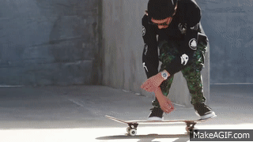
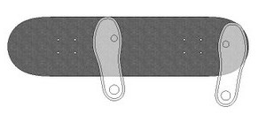
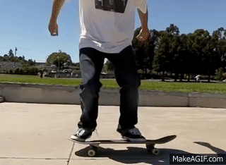

Finally, let's learn how to Ollie! This is one of the most famous beginner tricks that every skateboarder should learn. The Ollie is essentially jumping while bringing the board up along with your feet. A lot of people consider the Ollie as the most essential trick in skateboarding, because this trick acts as the foundation to a lot of other more technical tricks later on. Before attemping the Ollie you should be very comfortable riding your board and jumping onto your board.
The Ollie can be broken down into three steps:
When beginning to learn the Ollie you first want to understand the physics of the trick. What happens in an Ollie is quite simple, but can be difficult to understand at first. What happens first in an Ollie is the "popping" of the board. What this means is that the back foot is quickly stomping down on the tail of the board and causing the nose of the board to raise. This is what first allows the board to get off the ground or "jump". As the back foot "pops" the board the skater also jumps up with the board. This allows the board to get up in the air and follow along with the skater's jump. Finally, as the skater pops and jumps their front foot will slide up and out with the board. This sliding motion is crucial to leveling out the board in the air and having an Ollie with height.
Assuming it's your first time trying an Ollie, your first step is to figure out the foot positioning. Instead of having both feet over the bolts like usual, you now want your back foot to be on the tail of the board and your front foot slightly behind the bolts instead of on top of them. This positioning allows your back foot to pop quickly on the tail and your front foot to have enough room to slide up and out as your board rises. Next, practice stomping down on your tail with your back foot. Do this while stationary and get used to the feeling of your board hitting the ground while the front of your board comes up. Then, practice this same step but add in the slide. After popping your board slide the side of your toes up the board against the griptape. Your front food should be sliding and leaving marks on your griptape. Your shoes also might be worn after this step. This is good! The slide will allow you to level out the Ollie in the air and really make it look like a proper Ollie. Next, add the jump! What allows the board to leave the ground is your jump! If you don't jump with your board, your feet stop it from getting in the air. In order to get a proper jump, stand on your toes and jump off of your toes while bringing your knees up to your chest. This will ensure that you have a high jump and that your feet allow the board to come up after you pop. As you jump, pop and feel the board coming up with your feet that's when you want to slide your front foot! Finally, spot your landing and land with your feet on the bolts like you would have them while riding!
